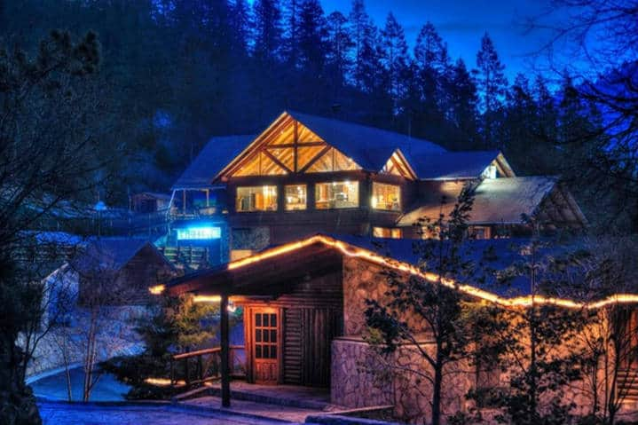

HISTORIA DE ARTEAGA
Un Pueblo Mágico en medio de una inmensa zona de bosques con pinos y valles de manzanos de los más impresionantes del país. Poseedor de un clima sumamente agradable donde predomina el viento fresco a cualquier hora del día. Arteaga es un destino que por sus bellos paisajes boscosos y cumbres nevadas en invierno, se considera “La Suiza de México”.

- Acampar
- Alameda Venustiano Carranza
- Campo de golf de Monterreal
- Cañón de San Isidro
- Carbonera, los Lirios
- Casa Carranza
- Cascada Cola de Caballo
- Cascada El Salto
- Ciclismo de montaña
- Descenso en trineo
- Esquiar en Bosques de Monterrea
- Rappel
- Senderismo / Trekking
Atractivos:
CARACTERISTICAS
| FESTIVIDADES | FUNDADO | CREADOR | MEJOR EPOCA | GASTRONOMIA |
|---|---|---|---|---|
| Día de San Isidro labrador, 15 mayo. Música, danzas y feria. | Fue fundado en el año 1591 | Fundado por Francisco de Urdiñola | Diciembre/Enero | Es un gran productor de frutas como manzana, mebrillo y durazno |
| Feria de la Manzana, septiembre. | Licores y dulces | |||
| Contradanza de Arteaga, se baila en casamientos, reuniones, bailes y bautizos. | Enchiladas | |||
| Carnitas Cristal |